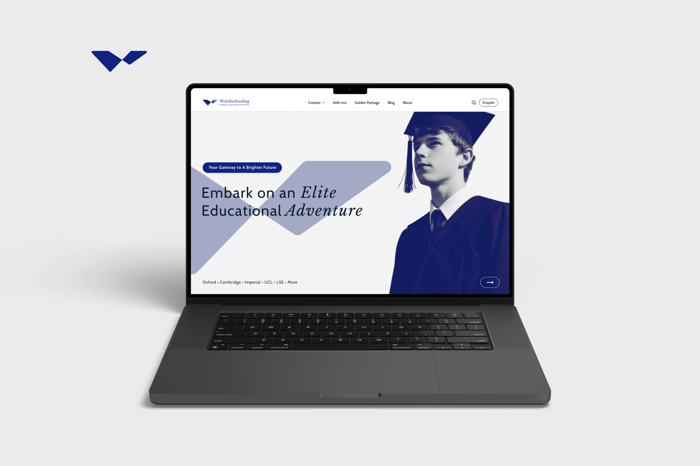
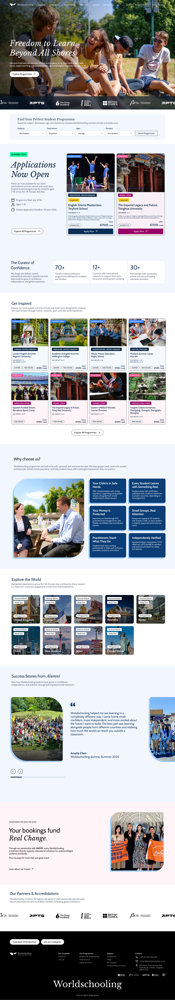
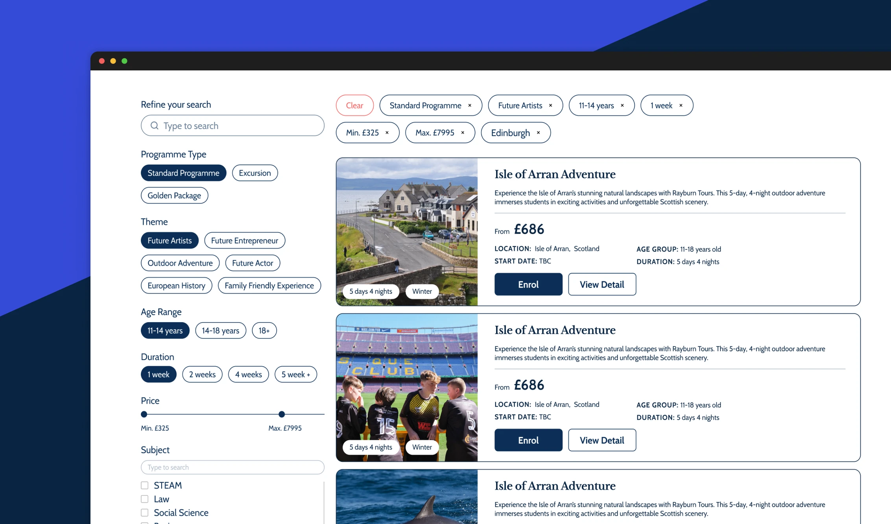
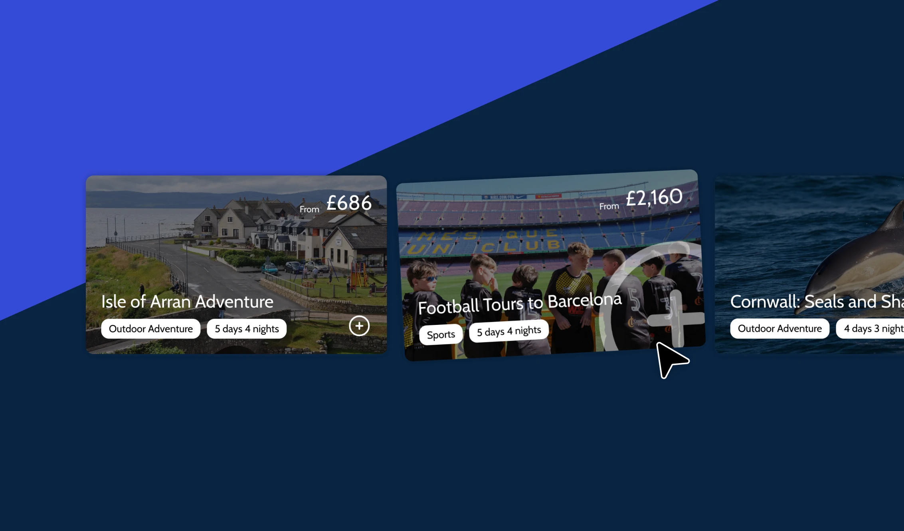
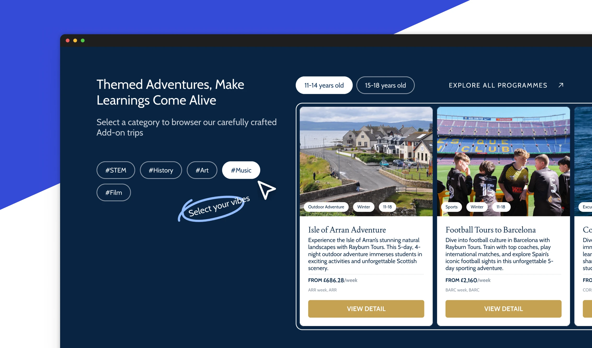
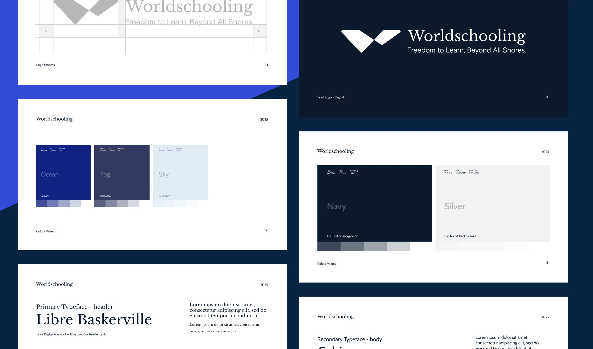
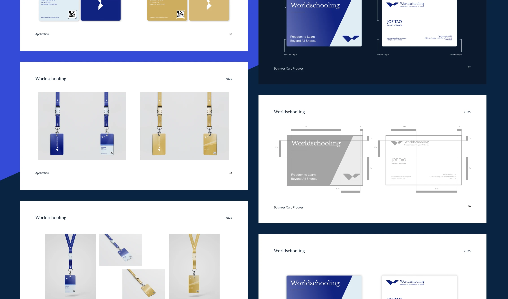

2025
Launch education travel without overbuilding
Worldschooling is an education-travel business helping families compare and book international learning programmes. I worked on the product structure, homepage journey, programme comparison, eligibility flow, deposit logic, and visual system.
The goal was to help parents judge fit, understand the next step, and place a deposit without waiting for a full custom booking system.

Problem statement
Because the first version was scoped like a full booking platform, the team risked delaying launch before parents had a simple way to compare programmes, judge fit, and understand the deposit step.
1 — Reduce the platform vision into a first release
The planned platform had enough pieces to become a long build: campus pages, subject pages, programme pages, search, blog, booking portal, and payment. That scope would have delayed the sales and fundraising surface the team needed first.
I reframed the first release around five visible steps: discover programmes, compare options, read details, submit eligibility information, and pay a deposit.
The tradeoff was deliberate: less automation at launch, but a credible product surface the team could use sooner.

Recent upgrade — rebuild the homepage around the new product structure
After the programme model became clearer, I updated the homepage so the new structure was visible from the first journey: search, open applications, programme cards, trust signals, destinations, alumni proof, and impact messaging.
This upgrade made the site feel less like a brochure and more like a structured product catalogue parents could browse before speaking to the team.

Partners up front. Trust faster.
Search moved here. Easy to start.
Seasonal offer leads. Fewer cards, clearer choice.
One inspiration section. Both product lines together.
Countries feel like travel, not a list.
Student story gets the whole stage.
Cleaner cause section. Softer, stronger close.
2 — Help parents compare fit before commitment
Parents do not begin by asking whether the site has a custom booking engine. They ask what the programme is, whether it fits their child, what is included, how safe it feels, and what happens after they submit details.
I exposed programme categories earlier in the journey and used filtering, cards, and detail pages to make comparison part of the first-screen logic.
Better comparison supports higher-quality enquiries and helps the team explain mid-tier and premium programmes without relying only on calls.


3 — Use recommendations to support value ladders
Entry-level pages were a natural place to introduce higher-value options, because users were already comparing dates, themes, and outcomes.
I added recommendation cards to show the next tier without forcing users into a hard upsell. The page could guide exploration while keeping the original programme path intact.
This helped the team connect lower-intent browsing with higher-value programme discovery at the moment comparison already made sense.

4 — Connect the website to the real student experience
The brand system needed to support more than the website. It had to carry through student-facing materials, campaign assets, and future programme pages.
I created reusable visual rules for typography, colour, programme cards, and physical touchpoints so the website felt connected to the real education-travel experience.
That gave the team a more coherent system for sales, operations, and future content production.


Delivery and results
The first release became a focused journey: homepage, programme filtering, detail pages, eligibility form, and universal deposit link.
It was less automated than a custom booking portal, but it launched faster and kept the important parent decisions visible: fit, commitment, eligibility, and deposit confidence.
So what?
The project showed that early platforms often need sharper scope more than more features. Parents did not need a fully automated booking engine first; they needed confidence that the programme fit their child and a clear next step they could trust.